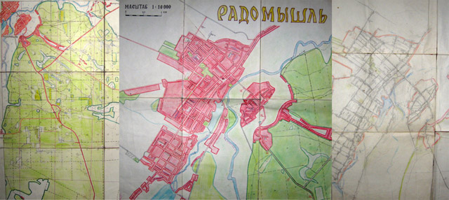

Історія створення карт
У підлітковому віці мені подобалося малювати мапи з вигаданими фантастичними країнами. Позначати на них міста, а потім з'єднувати їх автошляхами та залізницями. На берегах морів розташовувати міста-порти та прокладати до них морські шляхи. У той час я навіть колекціонував справжні географічні карти та атласи. Найбільшою була у мене карта України. Я з сусідськими хлопцями розгортав її на підлозі: ґудзики нам слугували уявними автомобілями, якими ми подорожували глянцевими дорогами між містами країни. Ось це була гра — не якась там настільна, а напільна! Після закінчення школи цю карту я подарував рідному навчальному закладу.
А ще ми любили ходити містом: розвідувати вулиці, на яких ніколи не бували, бродити околицями та відкривати для себе, як колумби, нові невідомі нам місця. Мені завжди хотілося побачити Радомишль з висоти пташиного польоту, подивитися на його обриси. По пам'яті я почав креслити свої перші плани міста.
Пройшли роки. Дитячі захоплення витіснулись дорослим життям і забулись. Якось я купив собі маленький калькулятор, вивчаючи його функції, помітив одну цікаву особливість: коли до набраного числа поставити «плюс», а потім постійно натискати кнопку «дорівнює», то вказане число буде весь час додаватися. З калькулятора виходить непоганий лічильник — тут до мене і повернулися з дитинства мої мрії створити план Радомишля. Я пристосував калькулятор на кермо велосипеда, а з геркону і магніту зробив датчик на колесо, під’єднавши його проводами паралельно кнопці «дорівнює». Потім увів окружність колеса 2,16 м. Все, одометр готовий!
Озброївшись компасом (для виміру кутів), блокнотом і олівцем, я почав їздити на велосипеді та проводити виміри. Потім вдома в масштабі переносив їх на папір, викреслюючи квартали міста. Паралельно з планом Радомишля я створював карту прилеглого до нього лісу.

Багато часу було витрачено, сотні кілометрів наїжджено та пройдено. Радомишльські ліси ростуть на піщаних ґрунтах, тож часто лісові дороги та просіки для велосипедиста через пісок стають непроїзними, а в низинах вони ще й губляться в заболочених хащах із порослі. Але на які труднощі я б не натрапив, бажання створити карти міста та лісу було сильним.
Хоча, якщо бути чесним до кінця, ентузіазм кілька разів покидав мене, і робота на рік-два зупинялася. Потім знову я повертався до неї. Ось так потроху на папері час від часу матеріалізувалися мої дитячі мрії. Звичайно, на цьому все не закінчилося. Років зо два тому я придбав комп'ютер, трохи пізніше цифровий фотоапарат. Нові захоплення — нові горизонти. Можливості комп'ютерної техніки не дали мені заспокоїтись. І я, ледь навчившись керувати комп'ютерною мишкою, побачив перший найпростіший графічний редактор Paint із стандартного комплекту Windows, і відразу почав створювати карти в електронному вигляді. Довелося дуже багато попрацювати та знайти способи, як розв’язати поставлені задачі за допомогою обмежених можливостей цієї програми.
Скоро буде рік, як я зробив свою першу вилазку в Інтернет. У мережі нещодавно з’явились кілька варіантів знімків Радомишля і його околиць зі супутника. Роздільна здатність фото невелика, але це краще, ніж взагалі нічого. Більші можливості має графічний редактор Photoshop. Якщо фото із супутника відредагувати в цій програмі, то може вийти відмінна карта лісу та план міста, причому з мінімальними спотвореннями. Але є одне «але»… як завжди: коли є бажання — мало можливостей, а коли є можливості — немає бажання. Хоча, хто знає, може, коли-небудь…
***
«Коли-небудь» настало в грудні 2009 року. На початку літа цього ж року в Інтернеті з'явився знімок Радомишля зі супутника DIGITAL GLOBAL. Щоправда, якість знімка залишає бажати кращого: не скрізь можна розгледіти малі будиночки, та й хмари закривають частину міста. Але навіть за таких недоліків радості у мене було безмірно. Нарешті я зміг розглядати рідне місто та його околиці з висоти пташиного польоту. З трепетом я вдивлявся у давно вже мені знайому і рідну мережу вулиць, але вже деталізовану будинками, зеленню дерев, вигинами річок, контурами озер. Тепер я мав фотографічну інформацію, і у мене була програма Photoshop та навички роботи в ній, а не було тільки бажання.
Минуло ще пів року, і, якось на початку грудня, я вирішив спробувати малювати карту на основі космічного знімка… так і не зміг зупинитися, поки її не намалював. Мої дитячі картографічні фантазії не пропали даремно. Вони втілилися в реальну роботу, якою послуговуються радомишляни та не лише. Моя праця була використана в колективному проекті TravelGPS, де план Радомишля був адаптований та інтегрований у, Навігаційну карту України.
Післямова
У новій версії плану 2010 року за основу був взятий супутниковий знімок. У версію 2017 року були внесені виправлення та доповнення: підписано 135 міських вулиць, замінено 33 назви на нові, 8 — позначені для забудови нового мікрорайону, 4 — прилеглі до села Лутівки. Всього підписано 147 вулиць. У центрі Радомишля показана забудова кварталів, а також великі промислові будівлі та багатоповерхові будинки по всьому місту. На плані підписано також деякі державні установи, громадські й приватні підприємства.